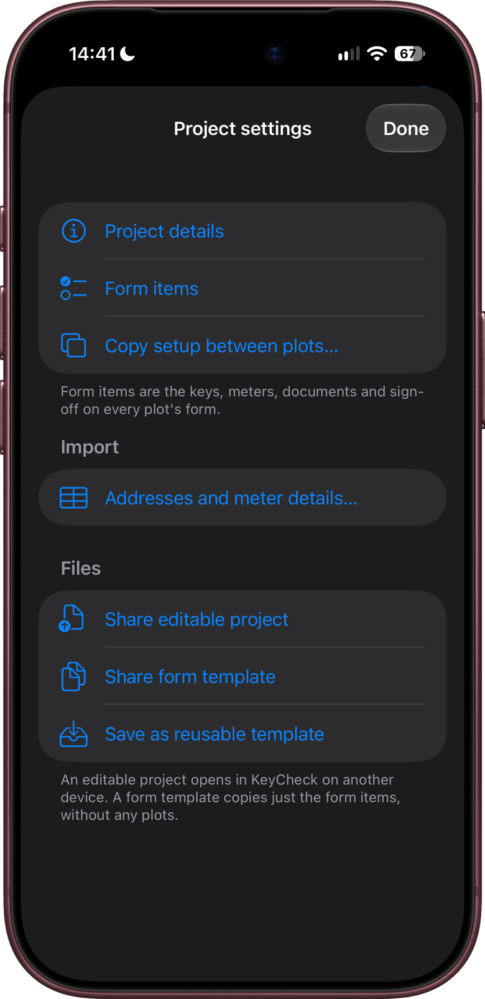
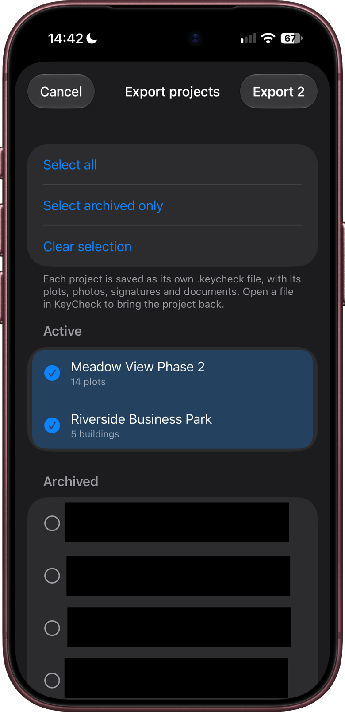
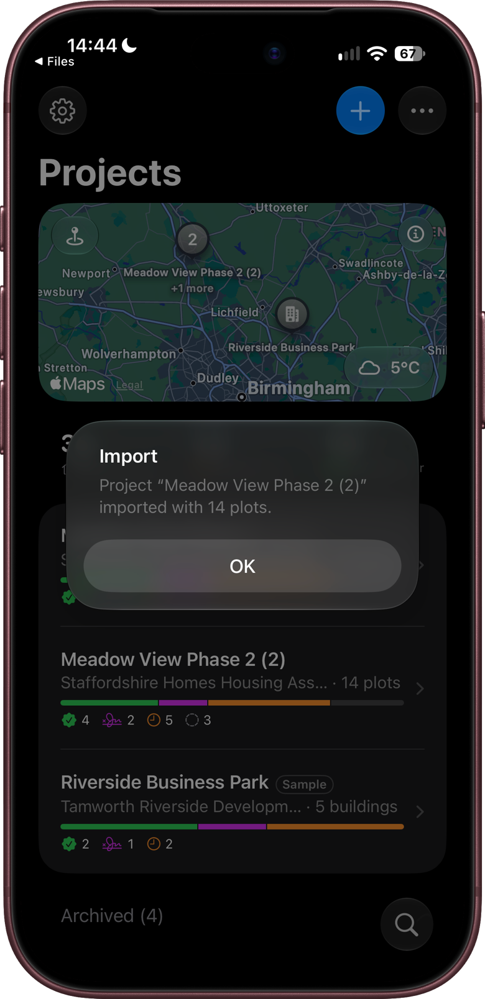
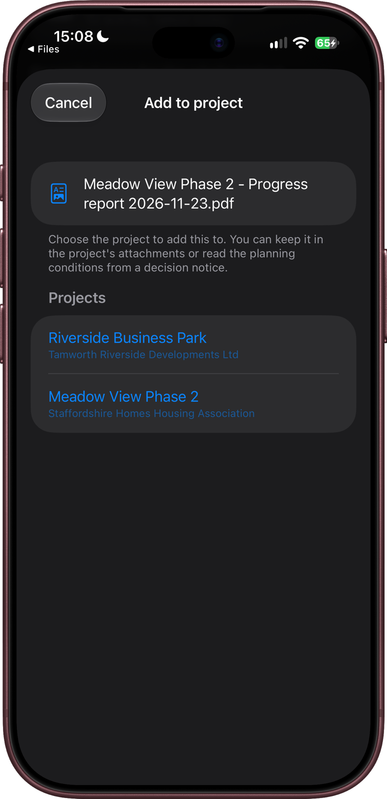
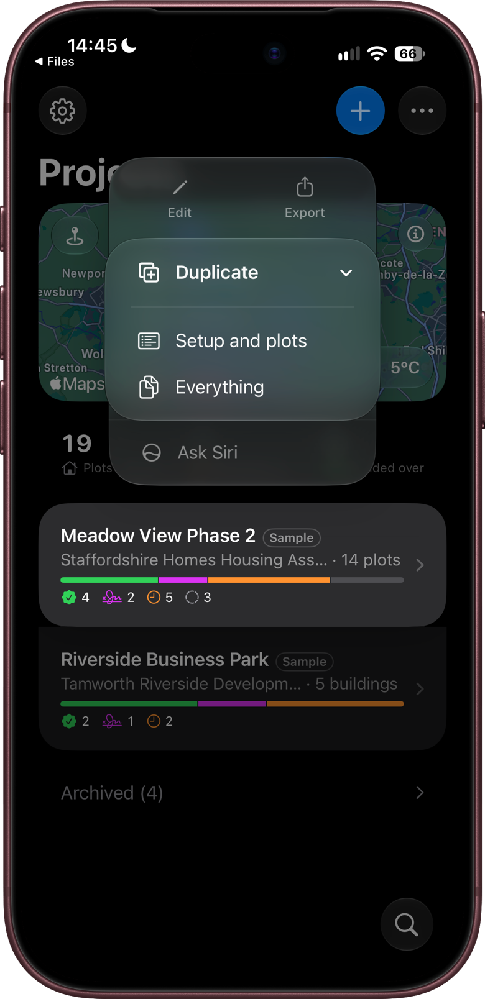

KeyCheck can save a whole project as one file, so you can send it to a colleague, keep a copy for your records, or move it to another device. It can also take in files sent from other apps, such as a plot schedule from Outlook or a decision notice from Teams.
This chapter covers KeyCheck files, sending files to KeyCheck, duplicating, archiving and deleting projects, and doing all of this on the Mac.
KeyCheck files
A KeyCheck file ends in .keycheck. A project file holds everything in the project:
- the project details, form items and branding
- every plot, with its readings, keys, documents, snags, notes and dates
- meter photos, snag photos and signatures
- communal keys, communal meters, project documents and site details
- attachments, including their folders, tags and markup
- the planning register and the project log
- the date of the last progress report, so Since last report carries on (chapter 11)
Because photos and signatures are included, a busy site can make a large file. KeyCheck doesn't show the size, so if email won't take it, use AirDrop, or save it to OneDrive or iCloud Drive and send a link.
There are also small KeyCheck files for a single form template or branding profile (see Templates and branding).
A copy, not sharing
A KeyCheck file is a separate copy. Once your colleague opens it, their project and yours go their own ways: changes on one don't appear on the other.
To work on the same project together, with changes appearing for everyone, share it through iCloud instead (chapter 12). Use a KeyCheck file to hand a project over, send it to someone who doesn't use iCloud sharing, or keep a copy at a point in time, such as at practical completion.
Sending one project
- Open the project and tap Project settings (the gear at the top right of the Plots tab, or ⌥⌘, on the Mac).
- Under Files, tap Share editable project. The button shows Preparing, with a percentage, while KeyCheck writes the file.
- The share sheet opens. Choose AirDrop, Mail, Messages, Save to Files or another app, such as Outlook, Teams or OneDrive.
Keep the screen open while it's preparing. If you close it, KeyCheck stops and nothing is sent.
You can do this even without a KeyCheck Pro subscription, and on a project someone has shared with you as view only.

Exporting several projects
To save several projects at once, for example to keep a backup or clear finished sites off your iPhone:
- On the Projects screen, tap ••• (top right) and choose Export projects….
- Tap each project you want, or use Select all. If you have archived projects, Select archived only picks just those. Clear selection starts again.
- Tap Export (it shows how many you've chosen, for example Export 3). KeyCheck shows "Preparing 1 of 3…" while it works.
- Choose a folder, such as one in iCloud Drive, OneDrive or On My iPhone, and save.
Each project is saved as its own .keycheck file, named after the project. If two projects have the same name, the second gets "(2)" on the end, so neither file replaces the other.
To export just one project this way, touch and hold it in the Projects list (or swipe left and tap More) and choose Export. The same screen opens with that project already ticked.
If a project couldn't be written, KeyCheck says which: "Some projects couldn't be exported". Try exporting it on its own, or free up some space on the device.

Opening a KeyCheck file
On the other iPhone, iPad or Mac:
- From Mail, Messages, Files or OneDrive: tap the file, then tap the share button and choose KeyCheck. A file sent by AirDrop opens in KeyCheck.
- From inside KeyCheck: go to Settings → Import and tap Import editable project…, then pick the file. (On the Mac, it's in Settings → Templates, or use File → Import…; see On the Mac.)
KeyCheck reads the file and shows a message such as "Project “Meadow View Phase 2” imported with 14 plots." Tap OK. The project appears in the Projects list.
Good to know:
- It's always added as a new project. Opening a file never replaces or changes a project you already have. If you already have a project with the same name, the new one is called, for example, "Meadow View Phase 2 (2)". Delete whichever you don't need.
- It needs KeyCheck Pro. Importing adds a new project, so, like creating one, it needs a subscription. Without one, Import editable project… in Settings is greyed out. You can still send and export projects without a subscription.
- It's yours. The imported project isn't shared with anyone, even if the original was. It arrives in the main list, even if it was archived when it was exported.
- Branding comes too. If you already have an identical branding profile, the project uses it. Otherwise KeyCheck adds the file's profile to Settings → Branding.
- Importing needs KeyCheck Pro. Without a subscription, KeyCheck says "Importing a project needs a KeyCheck Pro subscription. Subscribe, then open the file again."
- A big project can take a while. The project only appears once every plot is in. If KeyCheck is closed part-way, what came in so far waits in Recently Deleted; delete it and open the file again.
- "This file was made by a newer version of KeyCheck" means the sender's app is newer than yours. Update KeyCheck from TestFlight or the App Store, then try again.

Templates and branding
Form templates and branding profiles can be sent as KeyCheck files too:
- A form template: in a project, tap Project settings → Share form template. Or in Settings → Reusable templates, touch and hold a template and choose Share. This copies just the form items, without any plots (chapter 3).
- A branding profile: in Settings → Branding, touch and hold a profile and choose Share (chapter 2).
When your colleague opens the file in KeyCheck, it says "Template “…” added. Choose it when creating a new project." or "Branding “…” added. Pick it in a project's details."
Sending files to KeyCheck from other apps
Colleagues often send plot schedules, site plans and decision notices by email or Teams. You can send these straight to KeyCheck without saving them first:
- In Mail, Outlook, Teams, OneDrive or Files, open or touch and hold the file and tap the share button.
- Choose KeyCheck.
- KeyCheck opens with the file's name at the top and a list of your projects. Tap the project it's for.
What happens next depends on the file:
| File | Screen title | What happens when you pick a project |
|---|---|---|
| CSV spreadsheet (plot schedule) | Import CSV | The CSV import screen opens with the file already loaded, so you can check which column is which before anything changes (chapter 3). |
| Add to project | KeyCheck asks what to do with it: Add to attachments, or Read planning conditions for a decision notice (chapter 7). Reading the conditions also lets you keep the notice in Attachments. | |
| Photo | Add to project | It's added to the project's attachments straight away, and KeyCheck says "Added". |
| Word document (.docx or .doc) | Planning conditions | KeyCheck reads it as a planning decision notice and shows the conditions to check before anything is added (chapter 7). |
Good to know:
- Only projects you can change are listed. Archived projects and projects shared with you as view only are left out. Without KeyCheck Pro, the list is empty and says "Adding files needs a KeyCheck Pro subscription."
- Word documents can only be read as decision notices. To keep any other Word document with a project, save it as a PDF first.
- The same file twice: if the PDF or photo is already in the project's attachments, KeyCheck says so and doesn't add it again.
- If a file won't open, KeyCheck suggests saving it to Files first, then importing it from the project, for example with Import from Files in Attachments.
- Tap Cancel to close without adding anything.
Most developers' schedules and planning letters arrive as email attachments, often on a Windows PC. Forward them to your work email on your iPhone, or open them in the Outlook or Teams app, and send them straight to KeyCheck. Colleagues on a PC can save the file to OneDrive or a Teams channel, and you can send it to KeyCheck from the OneDrive or Teams app.

Duplicating a project
To start a new phase or a similar site from one you've already set up, touch and hold the project in the Projects list (or swipe left and tap More) and choose Duplicate, then:
- Setup and plots: copies the project details, form items, branding, site details, attachments, planning history and the list of plots, with their addresses and details. Readings, keys handed over, photos, signatures and dates start empty. Communal keys and meters are kept, without who received the keys or the readings.
- Everything: an exact copy, including every reading, photo and signature.
The copy is called, for example, "Meadow View Phase 2 copy", and opens straight away. Rename it in Project settings → Project details.
A duplicate is your own project, even if the original was shared with you, and it isn't shared with anyone. It stays on this device and your other devices (with iCloud sync on), so to give a copy to someone else, send it as a KeyCheck file.

Archiving a project
When a site is finished, archive it to clear it from the main list without deleting anything.
- To archive: swipe right on the project and tap Archive, or touch and hold it and choose Archive.
- To see archived projects: tap Archived at the bottom of the Projects list (it shows how many, for example Archived (2)). Tap it again to hide them.
- To bring one back: swipe right on it in the Archived section and tap Unarchive, or touch and hold it and choose Unarchive.
An archived project still opens and works as normal, and it's still found by search. Archiving syncs, so it moves to the Archived section on your other devices and for anyone it's shared with. You need to be able to change the project to archive it.
With the Archived section open, Export archived projects at the bottom saves them as KeyCheck files, for example before deleting them.
Deleting and Recently Deleted
To delete a project, swipe left on it and tap Delete, or touch and hold it and choose Delete. A banner says "Moved to Recently Deleted" with Undo for a few seconds.
A deleted project isn't gone straight away. It waits in Recently Deleted for 30 days, then is deleted for good, from all your devices and for everyone it's shared with.
- On the Projects screen, tap ••• and choose Recently Deleted.
- Each project shows when it was deleted and how long is left, for example "Deleted 12 November 2026 · 21 days left".
- Tap Restore to put it back in the Projects list, just as it was. Restoring is a change, so it needs KeyCheck Pro; without it, Restore isn't shown.
- To delete one for good now, swipe left on it (or touch and hold it) and choose Delete Now, then confirm. This can't be undone.
Tap Done to close.

Leaving a shared project
If someone else shared a project with you (chapter 12), you can't delete it, but you can leave it. Swipe left on it and tap Leave, or touch and hold it and choose Leave. A banner says "Left shared project" with Undo for a few seconds.
The project is removed from your devices straight away. It doesn't go to Recently Deleted, and the owner and everyone else keep it. To get it back, ask the owner to invite you again.
If the owner deletes a shared project, it goes to your Recently Deleted too. If you were allowed to make changes, you can Restore it, which brings it back for everyone. Only the owner can delete it for good.
On the Mac
The Mac does all of the above, the Mac way.
- Export: right-click a project in the sidebar and choose Export…. The Export projects window opens with it ticked; tick any others, click Export, choose a folder and click Save Here. If a file of the same name is already there, the new one is numbered rather than replacing it.
- Share editable project: in Project Settings… (⌥⌘,), click Share editable project, then Share… for AirDrop, Mail or Messages, or Save… to choose where to save it.
- Import: choose File → Import… (⌘O) and pick a KeyCheck file, CSV, PDF, photo or Word document. It's handled just as on the iPhone: a KeyCheck file is imported, and anything else asks which project it's for.
- Drag files in: drag a file from Finder onto the KeyCheck window to open it the same way. Dragging onto particular places goes straight in:
- PDFs and photos dragged onto Attachments are added to them.
- PDFs dragged onto Planning go into the planning import (chapter 7).
- Photos dragged onto a meter on a plot's form are added as meter photos.
- Drag files out: drag an attachment out of Attachments, or a plot out of the plot list to get its handover PDF, and drop it in Finder, Mail or another app.
- Duplicate, Archive and Delete: right-click a project in the sidebar. Duplicate has Setup and Plots and Everything. Delete… asks first, then moves the project to Recently Deleted. On a project shared with you, it's Leave Shared Project….
- Archived projects are in the Archived section of the sidebar; click it to open or close it. In All Projects, turn on Show Archived to include them, and select several and right-click to archive them together.
- Recently Deleted is the bin button at the foot of the sidebar. It only appears when something's in it.
- Templates and branding: share them from the Templates and Branding tabs in KeyCheck → Settings (⌘,).
On a wide iPad, the sidebar works the same way: touch and hold a project for Export…, Duplicate, Archive and Delete…, swipe for Archive and Delete, and find Recently Deleted at the end of the list.
When a site reaches the end of its defects period, export it as a KeyCheck file and keep it with the contract file in OneDrive or SharePoint. That gives a complete record, with every photo and signature, that can be opened again in KeyCheck years later. Then archive or delete the project to keep your list tidy.